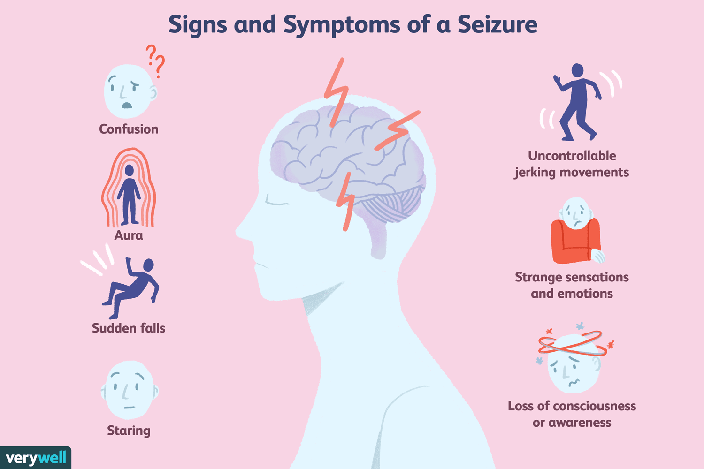

A generalized tonic-clonic seizure, sometimes called a grand mal seizure, is a disturbance in the
functioning of both sides of your brain. This disturbance is caused by electrical signals spreading
through the brain inappropriately. Often this will result in signals being sent to your muscles,
nerves, or glands. The spread of these signals in your brain can make you lose consciousness and
have severe muscle contractions. This causes a lot of problem for the patients when they are alone.
This idea is to prepare a health band for such people in order to alert their family members or
friends or just to activate an alarm in the public places considering the abrupt changes in bp and
pulse rate.This condition may occur due to the low level of sodium, calcium, magnesium or glucose in our
body, also because of alcohol and drug abuse. This may also be because of genetic conditions. The
person might get aura, may start to scream involuntarily and he may pass out. There will be sudden
changes in the blood pressure and pulse rate. This can be sensed using pulse rate sensor present in
the health band. Blood pressure sensor will also be kept in the health band. Additionally, an audio
frequency detector is added in order to detect the abrupt scream of patients. All these things are put
together in a health band that is interfaced with gps and gsm module or WIFI module to alert the
people related to patients who are nearby and within the reach.

MOTIVATION
Seizure is one of those conditions that cannot be controlled or predicted before it occurs to a
person. Typically, someone who has a generalized tonic-clonic seizure will stiffen and fall. Their
limbs and face will appear to jerk rapidly as their muscles convulse. If they are alone in bathrooms
or any other places where their own people are not really standing next to them, they might face a
very difficult situation and might clench something in fist and break it. It is necessary to have
someone next to them when such things happen. This is the motive that made us to come up with
this idea.
Social Impact
Since seizers are one of the most common disorders, patients need to be taken care of. There is no
proper solution for this problem. So, it is required to pay special attention to those who have it. Our
idea of health band might help them in certain ways to face the problem they have. This may also
increase their confidence when they are in the public. Their fear might reduce. Awareness among
general public is also very important.